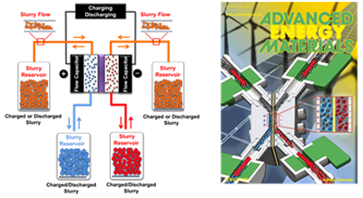
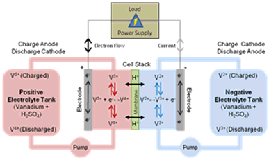

The core mission of ECSL is to develop novel diagnostic and computational tools to understand critical issues in flow-assisted electrochemical systems and enable better system design. Due to the complex nature of these systems, our research is highly interdisciplinary and spans the interface of transport phenomena, materials characterization, electrochemistry and system engineering. Our core research activities are categorized into three thrusts, i) materials characterization, ii) computational studies and iii) performance diagnostics and system design.
1. Microstructure Analysis and Characterization: Our efforts in this thrust are focused on understanding the internal structure of materials, providing benchmark data for modeling studies, and guiding component design efforts. In particular, we are interested in determining the difficult-to-measure structure-related transport properties of next generation materials and establishing structure-performance linkages for these electrochemical systems.
2. Computational Studies of Electrochemical Systems: Our efforts in this thrust are aimed at exploring physicochemical phenomena that take place in these systems and establishing links between theory and practice. In particular, we develop experimentally validated multi-scale electrochemical models that utilize the wealth of microstructure information and enable simulation of operation of these electrochemical systems under a wide range of operating conditions to better understand the key issues governing performance loss in these devices.
3. Performance Diagnostics and System Design: Our efforts in this thrust are toward developing novel in-situ and ex-situ diagnostic tools and conducting performance testing to identify the major losses, characterize system performance, and provide benchmark data for modeling studies. We perform in-situ and ex-situ analysis at both component and system levels to guide component/system design efforts.
Currently, the research activities in ECSL are primarily focused on three technologies:
-

Electrochemical Flow Capacitor (EFC): The EFC is a new energy concept that we have developed in collaboration with Prof. Yury Gogotsi's group at Drexel. This new capacitor concept takes the advantages of both supercapacitors and flow batteries. It enables rapid charging/discharging (i.e., fast system response) with high power, while providing decoupled energy storage and power output (i.e., scalable energy storage capacity). The unique aspect of this new concept is the use of flowable carbon-electrolyte slurries for capacitive energy storage. For more information, please look at our publications publications or contact Dr. Kumbur.
Our current efforts on EFCs include: flow cell design, component development, performance benchmarking, investigation of carbon materials, slurry preparation and synthesis, prototype development, and detailed techno-economical analysis of this technology.
- 
Redox Flow Batteries (RFBs): Recently, RFBs have emerged as a promising energy storage technology due to their flexible design and ability to efficiently store energy. Unlike traditional batteries, the key advantage of RFBs is that power generation and energy storage are decoupled, such that the energy storage capacity is determined by the size of the electrolyte tanks, whereas the power rating is dictated by the size and number of redox cells.
We are currently working on various aspects of RFBs, including: transport phenomena in RFB membranes, capacity fade and mitigation strategies, electrolyte synthesis, new electrode architectures, electrode treatment and functionalization, understanding the transport related losses, electrolyte flow management, and long-term performance analysis.
-
Polymer Electrolyte Fuel Cells (PEFCs): Due to their potential for high power density and efficiency, fuel cells remain at the core of our research activities. We are particularly interested in PEFCs due to their unique advantages and wide range of application areas. Currently, our research on PEFCs is aimed at assessing the role of the internal structure of materials on the water/thermal management, performance, and durability of these systems. We perform experimental and computational studies to analyze different materials and understand the fundamental mechanisms responsible for performance loss in these systems